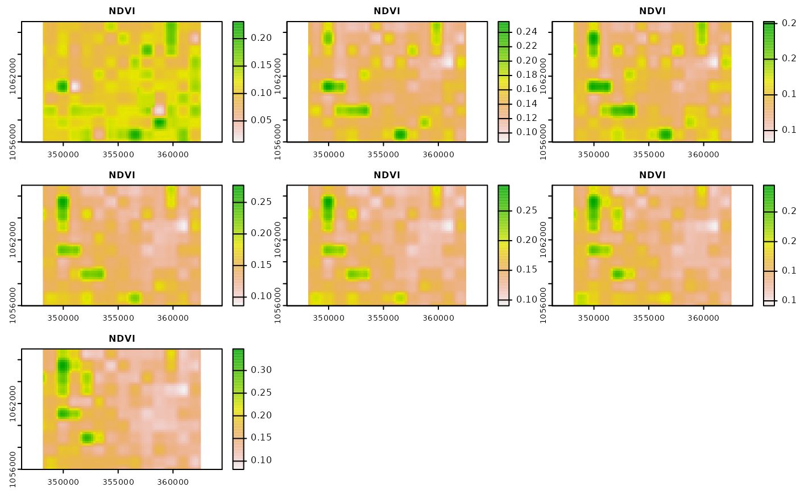

indices.RmdIn this vignette mapme.vegetation functionality to derive a dense time series of vegetation indices is presented. The package comes with a list of over 100 indices that can be calculated for Sentinel 2. Issue the following command to inspect available indices.
head(check_indices())
#> longname name
#> 1 Aerosol free vegetation index 1600 AFRI1600
#> 2 Aerosol free vegetation index 2100 AFRI2100
#> 3 Anthocyanin reflectance index ARI
#> 4 Ashburn Vegetation Index AVI
#> 5 Atmospherically Resistant Vegetation Index 2 ARVI2
#> 6 Blue-wide dynamic range vegetation index BWDRVI
#> link
#> 1 http://www.indexdatabase.de/db/i-single.php?id=393
#> 2 http://www.indexdatabase.de/db/i-single.php?id=395
#> 3 http://www.indexdatabase.de/db/i-single.php?id=214
#> 4 http://www.indexdatabase.de/db/i-single.php?id=574
#> 5 http://www.indexdatabase.de/db/i-single.php?id=396
#> 6 http://www.indexdatabase.de/db/i-single.php?id=136
#> s2_formula
#> 1 (band_8-0.66*(band_11)/(band_8+0.66*band_11))
#> 2 (band_8-0.5*(band_12)/(band_8+0.56*band_12))
#> 3 (1)/(band_3)-(1)/(band_5)
#> 4 2.0*band_9-band_4
#> 5 -0.18+1.17*((band_8-band_4)/(band_8+band_4))
#> 6 (0.1*band_8-band_2)/(0.1*band_8+band_2)In order to specify one or multiple indices refer to the short name found in the column name. As a prerequisite for calculating indices we assume that S2 data for a given spatio-temporal AOI has been downloaded as explained in the vignette xx. Additionally, we assume that the SCL has been enriched using the functionality explained in the vignette xx. It is however possible to skip the cloud mask buffering and proceed with the original SCL files. First, let’s read in the necessary files and declare some arguments for the index calculation.
s2_files = list.files(system.file("extdata/s2a", package = "mapme.vegetation"), ".tif", full.names = T)
scl_files = list.files(system.file("extdata/scl", package = "mapme.vegetation"), ".tif", full.names = T)
aoi = st_read(system.file("extdata", "exp_region_wgs.gpkg", package = "mapme.vegetation"), quiet = T)
aoi_utm = st_transform(aoi, st_crs(32638))
bbox = st_bbox(aoi_utm)
dx = 200 # desired outcome resolution in x direction
dy = 200 # desired outcome resolution in y direction
dt = "P14D" # desired temporal resolution - here 1 month
srs = "EPSG:32638" # desired CRS of the outcome raster - bbox must be specified in that crs
after = "2017-05-01" # start date
before = "2017-07-31" # end date
index = "NDVI" # index to calculate, can specify multiple indices
aggregation = "max" # aggregation method for scene within the same time step
resampling = "cubic" # GDAL resampling method to match the outcome grid size
dir.create(file.path(rundir, "ndvi")) # create output directories
dir.create(file.path(rundir, "filled")) # create output directories
label = "NDVI-" # appended to filename
mask_layer = "SCL" # which band in the data cube is used as mask
mask_values = 1 # which values to mask out
mask_invert = F # logical if mask_values should be masked (TRUE) or kept (FALSE)With this prerequisites we can nearly start to calculate the NDVI. Note, however, that we set the mask_value = 1 to account for our enriched cloud mask. That is why we should exchange the original SCL files with our new SCL files.
Now we can start calculating the index. We will use a collection definition which comes with the mapme.vegetation package to let gdalcubes how to interpret the filenames from AWS. That way, we are sure that the spatio-temporal extent of each single file is rightly interpreted.
raw_ndvi = index_cube(files = s2_files,
format = system.file("sentinel2_l2a_cog.json", package = "mapme.vegetation"),
dx = dx,
dy = dy,
dt = dt,
srs = srs,
bbox = bbox,
after = after,
before = before,
aggregation = aggregation,
resampling = resampling,
index = index,
label = label,
outdir = file.path(rundir, "ndvi"),
overwrite = TRUE,
mask_layer = mask_layer,
mask_values = mask_values,
mask_invert = mask_invert,
creation_options = list("COMPRESS" = "DEFLATE"))
#> Current cube view is:
#> A data cube view object
#>
#> Dimensions:
#> low high count pixel_size
#> t 2017-05-01 2017-08-06 7 P14D
#> y 1055984.8569279 1066984.8569279 55 200
#> x 348138.569534966 362538.569534966 72 200
#>
#> SRS: "EPSG:32638"
#> Temporal aggregation method: "max"
#> Spatial resampling method: "cubic"Let’s inspect the returned output. It is a list with three objects. The first object is called files and contains the path to the files. The second object is called band_order and indicates the names and order of the bands in the output files. This can be very important when multiple indices are calculated at once because gdalcubes will return the bands in alphabetical order. The last object is called time and indicates the timestamp for each of the output files. Together this information can be used for subsequent processing.
str(raw_ndvi)
#> List of 3
#> $ files : chr [1:7] "/tmp/Rtmpe1Ni0n/mapme.vegetation/ndvi/NDVI-2017-05-01.tif" "/tmp/Rtmpe1Ni0n/mapme.vegetation/ndvi/NDVI-2017-05-15.tif" "/tmp/Rtmpe1Ni0n/mapme.vegetation/ndvi/NDVI-2017-05-29.tif" "/tmp/Rtmpe1Ni0n/mapme.vegetation/ndvi/NDVI-2017-06-12.tif" ...
#> $ band_order: chr "NDVI"
#> $ time : chr [1:7] "2017-05-01" "2017-05-15" "2017-05-29" "2017-06-12" ...Let’s visualize the NDVI raster files.
We see that we have some missing values during the first 14 day period of May as well as more extensive missing values for the period starting of May, 29th. Note that in the original resolution it is likely that there are more missing values. In order to be able to ship the example data sets with the package, the spatial resolution has been resampled to 100 meters, which is a reduction in spatial resolution of factor 10 for the band 4 and 8 that are used for the NDVI calculation. However, due to cloud cover, missing observations are actually quite frequent. The mapme.vegetation package offers functionality for to apply interpolation of missing values and smoothing of the resulting time series.
The default functionality is quite basic, applying linear interpolation and applying a Savitzkiy-Golay filter. In case you need a more sophisticated gap-filling strategy you can define your own function. The function receives the time series of each pixel and is expected to return the same number of pixels. Let’s consider the smoothing with the basic approach. We will set the chunking option to simultaneously process all 7 time-steps of our spatio-temporal extent. This is important so that the complete time series is available.
fill_ndvi = smooth_cube(files = raw_ndvi$files,
bands = raw_ndvi$band_order,
times = raw_ndvi$time,
dx = dx,
dy = dy,
dt = dt,
srs = srs,
after = after,
before = before,
bbox = bbox,
aggregation = aggregation,
resampling = resampling,
outdir = file.path(rundir, "filled"),
label = label,
overwrite = TRUE,
chunking = c(7,100,100),
creation_options = list("COMPRESS" = "DEFLATE"))
#> Current cube view is:
#> A data cube view object
#>
#> Dimensions:
#> low high count pixel_size
#> t 2017-05-01 2017-08-06 7 P14D
#> y 1055984.8569279 1066984.8569279 55 200
#> x 348138.569534966 362538.569534966 72 200
#>
#> SRS: "EPSG:32638"
#> Temporal aggregation method: "max"
#> Spatial resampling method: "cubic"
#> No smoothing function specified.
#> Using Linear Interpolation and Savitzkiy-Golay-Filter with standard parameters.Let’s visualize the resulting gap filled and smoothed raster files. We see that the missing values have been filled. Whether or not the default smoothing function is suitable for your use case is a question you have to answer for yourself. In the example section of mapme.vegetation::smooth_cube you will find the default. You can exchange that function by specifying a custom function with the smoothing_function argument.
